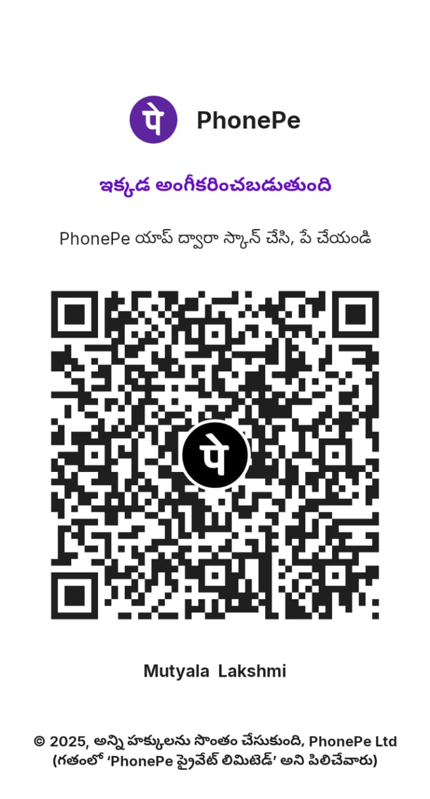

Support M. Tarun Sai
Age: 10 Years · Studying 6th Class
M. Tarun Sai is a 10-year-old child from Udrajavaram, East Godavari District. He is suffering from a brain tumor and urgently needs surgery. The estimated medical cost is ₹2,00,000.
Urgent Medical Appeal (English):
This is an emergency situation for a young child. Doctors have advised that the surgery should be done as early as possible to avoid further complications.
The family is going through a very difficult time. With humility and hope, we kindly request your support. Any donation, big or small, can help save a young life.
If you are unable to donate, we kindly request you to please share this message with others. Your kindness, prayers, and support are deeply appreciated during this critical time. Thank you for your understanding and compassion.
Best regards,
M. Tarun Sai Family Team 🙏
This is an emergency situation for a young child. Doctors have advised that the surgery should be done as early as possible to avoid further complications.
The family is going through a very difficult time. With humility and hope, we kindly request your support. Any donation, big or small, can help save a young life.
If you are unable to donate, we kindly request you to please share this message with others. Your kindness, prayers, and support are deeply appreciated during this critical time. Thank you for your understanding and compassion.
Best regards,
M. Tarun Sai Family Team 🙏
అత్యవసర వైద్య సహాయ విజ్ఞప్తి (తెలుగు):
ఇది ఒక చిన్నారి జీవితానికి సంబంధించిన అత్యవసర పరిస్థితి. ఎం. తరుణ్ సాయికి మెదడు ట్యూమర్ ఉండటంతో వెంటనే శస్త్రచికిత్స అవసరమని వైద్యులు తెలిపారు. ఆలస్యం జరిగితే ఆరోగ్య సమస్యలు మరింత తీవ్రమయ్యే అవకాశం ఉంది.
కుటుంబం ఈ సమయంలో తీవ్ర ఆర్థిక మరియు మానసిక ఒత్తిడిని ఎదుర్కొంటోంది. వినయంతో మరియు ఆశతో మీ సహాయాన్ని ప్రార్థిస్తున్నాము. మీరు చేసే చిన్న సహాయం కూడా ఒక ప్రాణాన్ని కాపాడగలదు.
మీరు సహాయం చేయలేకపోతే, దయచేసి ఈ సమాచారాన్ని ఇతరులతో పంచండి. మీ ప్రార్థనలు మరియు సహకారం ఈ అత్యవసర సమయంలో ఎంతో విలువైనవి అని మేము భావిస్తున్నాము. మీ సహకారానికి ముందుగానే ధన్యవాదాలు.
దయచేసి మీరు సహాయం చేయలేకపోతే ఈ సమాచారాన్ని ఇతరులతో పంచండి.
ఇది ఒక చిన్నారి జీవితానికి సంబంధించిన అత్యవసర పరిస్థితి. ఎం. తరుణ్ సాయికి మెదడు ట్యూమర్ ఉండటంతో వెంటనే శస్త్రచికిత్స అవసరమని వైద్యులు తెలిపారు. ఆలస్యం జరిగితే ఆరోగ్య సమస్యలు మరింత తీవ్రమయ్యే అవకాశం ఉంది.
కుటుంబం ఈ సమయంలో తీవ్ర ఆర్థిక మరియు మానసిక ఒత్తిడిని ఎదుర్కొంటోంది. వినయంతో మరియు ఆశతో మీ సహాయాన్ని ప్రార్థిస్తున్నాము. మీరు చేసే చిన్న సహాయం కూడా ఒక ప్రాణాన్ని కాపాడగలదు.
మీరు సహాయం చేయలేకపోతే, దయచేసి ఈ సమాచారాన్ని ఇతరులతో పంచండి. మీ ప్రార్థనలు మరియు సహకారం ఈ అత్యవసర సమయంలో ఎంతో విలువైనవి అని మేము భావిస్తున్నాము. మీ సహకారానికి ముందుగానే ధన్యవాదాలు.
దయచేసి మీరు సహాయం చేయలేకపోతే ఈ సమాచారాన్ని ఇతరులతో పంచండి.
₹70,000 raised of ₹2,00,000
✅ Scan QR to Pay (Works in all UPI apps)

UPI ID: 9390199441@ibl
Name: Mutyala Lakshmi
View Hospital Documents
Name: Mutyala Lakshmi
Important Note:
• Website payment buttons may fail due to UPI security rules.
• Please scan the QR code or manually enter the UPI ID.
• Amount goes directly to the child’s mother’s bank account.
• No middlemen, no tax deductions.
ముఖ్య గమనిక:
• యూపీఐ భద్రత కారణంగా వెబ్సైట్ బటన్లు పనిచేయకపోవచ్చు.
• దయచేసి QR కోడ్ స్కాన్ చేయండి లేదా యూపీఐ ఐడీ టైప్ చేయండి.
• మొత్తం నేరుగా amma ఖాతాకే జమ అవుతుంది.
• Website payment buttons may fail due to UPI security rules.
• Please scan the QR code or manually enter the UPI ID.
• Amount goes directly to the child’s mother’s bank account.
• No middlemen, no tax deductions.
ముఖ్య గమనిక:
• యూపీఐ భద్రత కారణంగా వెబ్సైట్ బటన్లు పనిచేయకపోవచ్చు.
• దయచేసి QR కోడ్ స్కాన్ చేయండి లేదా యూపీఐ ఐడీ టైప్ చేయండి.
• మొత్తం నేరుగా amma ఖాతాకే జమ అవుతుంది.